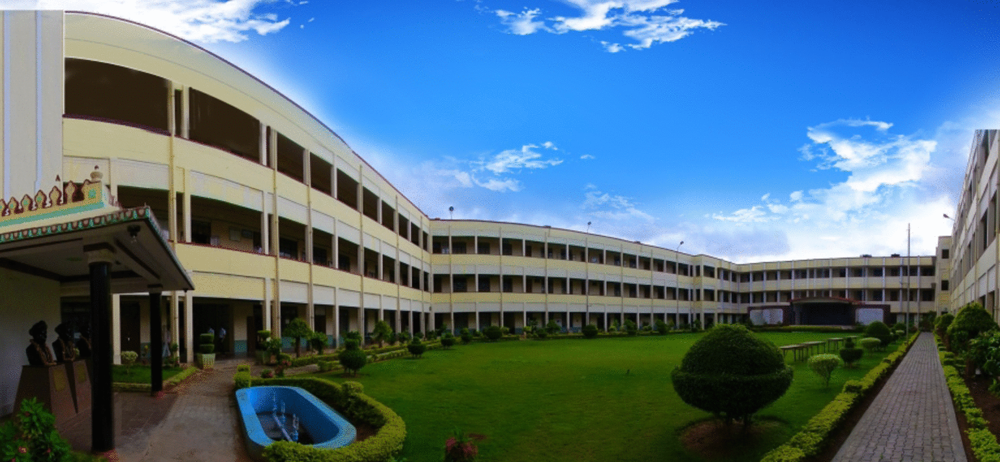

The National Institue of Engineering
I pursued my Bachelor's degree in Computer Science and Engineering at The National Institute of Engineering in Mysore, India, from August 2016 to August 2021. During my time there, I gained comprehensive knowledge and practical experience in various aspects of computer science and engineering, graduating with a GPA of 7.4/10.
During my four years at The National Institute of Engineering in Mysore, I gained hands-on experience in C, C++, Python, Java, and various other subjects. In my final year, my team and I developed an E-commerce Website for Herstellung from January to July 2021. We launched a real-time site on WordPress, managed hosting with GoDaddy, and integrated Instamojo for payments, optimizing webpages to enhance user experience and streamline transactions.